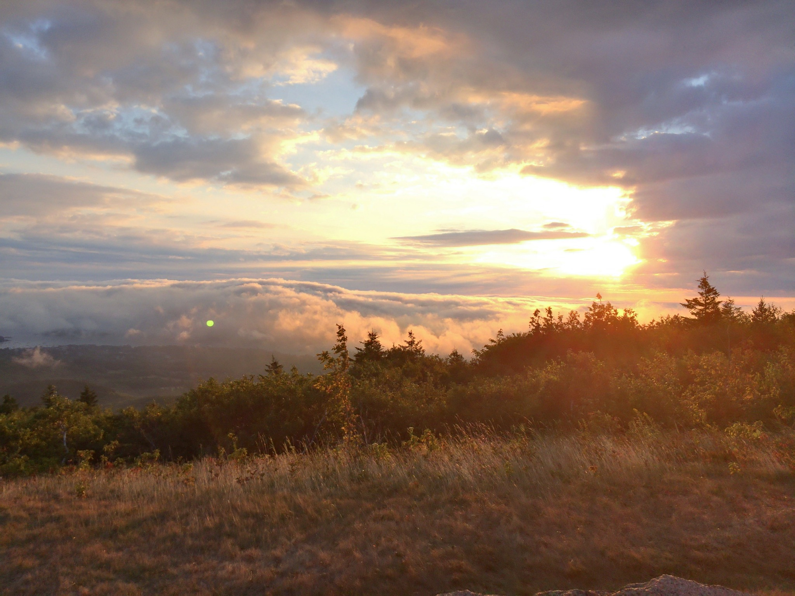
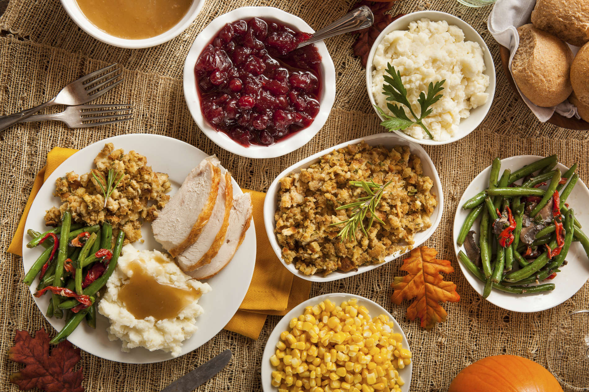
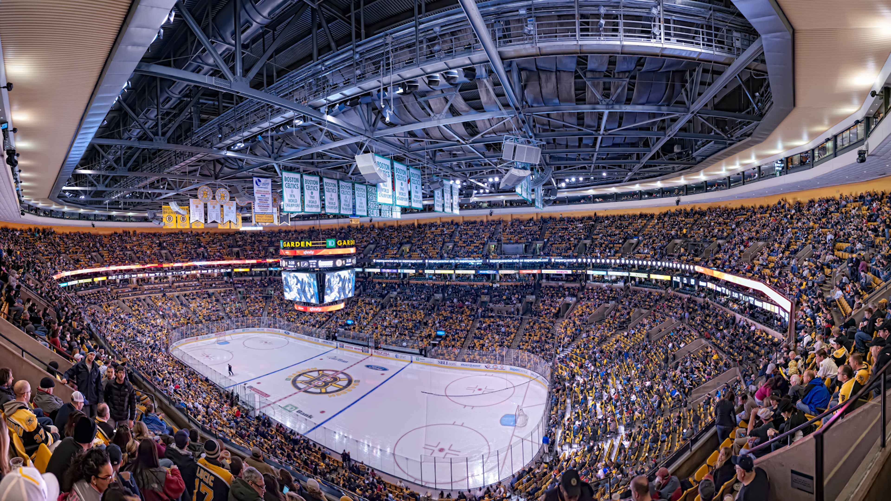
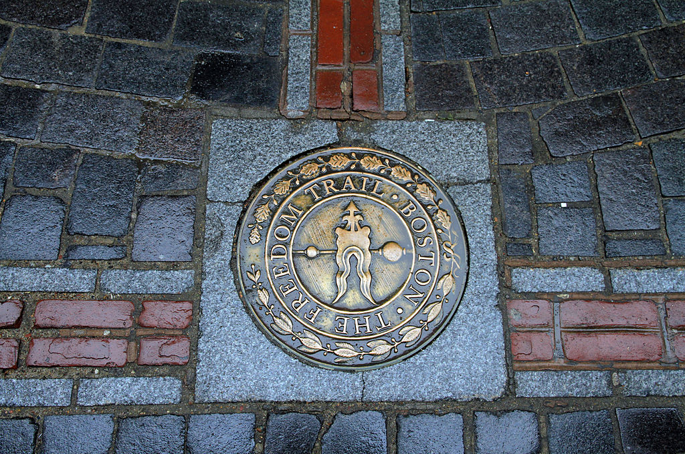
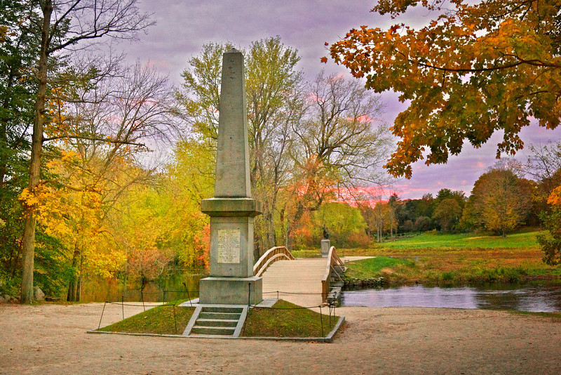

Ah... November.
The leaves are falling, the air is getting cold, and it's the month o Thanksgiving. If you're a New Englander, you're already used to the bitter, late-fall, coldness that comes every year. But if you don't know how to properly spend November, here's a guide to have the perfect November - my style.

Awesome (Food) Holidays in November
- November 1st - National Calzone Day (Inside-out pizzas?)
- November 2nd - National Deviled Egg Day
- November 3rd - National Sandwich Day
- November 4th - National Candy Day
- November 5th - National Doughnut Day
- November 6th - National Nachos Day
- November 7th - National Bittersweet Chocolate with Almonds Day (Yep. That's a thing)
- November 8th - National Cappuccino Day (I had a caffeine crash from this once)
- November 9th - My birthday (Ok not a food day, but I'm gonna put it out anyways)
- November 10th - National Vanilla Cupcake Day
- November 11th - National Sundae Day
- November 14th - National Pickle and Spicy Guacamole Day
- November 15th - National Rasin Bran Cereal Day
- November 16th - National Fast Food Day
- November 20th - National Peanut Butter Fudge Day
- November 21st - National Stuffing Day
- November 23th - National Espresso Day
- November 26th - National Cake Day
- November 28th - National French Toast Day

Note: Obviously Thanksgiving is on the fourth Thursday, not on a specific date. It still is the best holiday in November because there's a lot of food
Places to Vist (in Massachusetts)
Watch a Boston sports game
Whether you like football, hockey, or basketball, it's always a good time to watch a game in Boston or Foxborough.

Freedom Trail
The crisp November air is the perfect companion to the New England fall foliage

Old North Bridge
Located in Concord, MA (about a mile from where I used to go to school), nothing beats a walk at this historic sight. Once again, this location is an excellent spot for fall foiliage, and makes a great spot for fall photography
